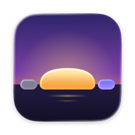

Daybeam
for Google Calendar
For Mac. In pre-release testing. Requires macOS 14 or later.
Your day, as one line
Daybeam draws your Google Calendar day as a thin line just under your Mac's menu bar. A glance tells you how much time you really have before your next meeting, without opening a calendar.
- Amber is free time.
- Violet is a meeting, with a video link or other people.
- Blue is an event of your own.
- Teal is focus time.
- Grey is time already gone, and a marker shows where you are now.
What Daybeam does
- Shows your real free time. Declined meetings and events marked free don't count against you.
- Warns when your free time shrinks, for example when someone books a meeting into a clear afternoon.
- Blocks focus time. One click turns a free stretch into a block on your Google Calendar.
- Focuses until your next event. A session ends a few minutes before you're due somewhere, and can turn on Do Not Disturb through the Shortcuts app.
- Gets you into calls. Join a meeting with one click, with an alert a few minutes before it starts.
- Shows your next 7 days, each day as its own line, where you can also create and edit events.
Connecting your Google Account
- Google handles sign-in. Daybeam does not receive your Google password.
- Calendar-list and calendar access identify your calendars, colors, and permissions. Event access loads your events and applies the changes you request, including focus blocks and Google Meet links.
- Your Mac communicates directly with Google. A calendar copy is stored locally for offline viewing; calendars are not uploaded to a Daybeam server.
- You can sign out in Daybeam or revoke access in Google Account connections. These are separate from managing an Apple subscription.
Read the Privacy Policy for data handling, Google Limited Use, retention, and your choices.
Free to use. Optional Pro.
Free: the line under the menu bar, today's schedule, Join, and reminders.
Daybeam Pro adds focus blocks, Focus until, Daybeam's alerts, every other day of the week, the event editor, and custom reminder timing. A complimentary seven-day Pro preview begins after your first successful calendar sync. It does not charge you or automatically start a subscription.
Pro offers a yearly auto-renewable subscription or a one-time lifetime purchase through Apple. The app shows Apple's current localized price before confirmation. Purchases can be restored using the associated Apple Account; subscriptions are managed through Apple.
Support
For Daybeam support or privacy requests, contact Daybeam support. Include the app version, macOS version, and a description of the issue. Do not send passwords, sign-in tokens, payment details, or unnecessary private calendar content.
Apple handles App Store billing and refund requests. You can manage a subscription or request a refund from Apple. The app is licensed under Apple's Standard End User License Agreement.